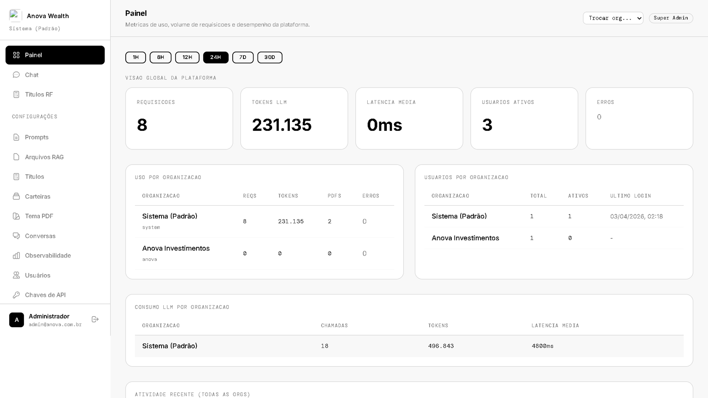

PASSO 01
Coleta em tempo real
Feed contínuo de cotações, volumes, indicadores macro e eventos corporativos de múltiplos ativos.
Life Invest é o algoritmo proprietário da Anova. Consulta o mercado em tempo real, constrói correlações entre ativos, gera sinais acionáveis e alimenta as carteiras geridas pela plataforma. Fundamento acima de intuição.

Motor proprietárioO Life Invest processa continuamente dados de ativos, volumes, correlações e eventos macro, transformando ruído em sinal acionável. Os sinais alimentam as carteiras administradas pela Anova (via Gestão Patrimonial) e ficam disponíveis dentro das ferramentas operadas pelos parceiros (via Wealth Hubs). Todo sinal passa por revisão humana antes de virar ordem — HITL desde o dia um.

Feed contínuo de cotações, volumes, indicadores macro e eventos corporativos de múltiplos ativos.
Cruzamento de correlações, volume profile e sinais técnicos-fundamentais em um único modelo proprietário.
O motor produz um sinal com fundamento explícito — por que, em quê, com qual confiança.
O sinal é revisado por um humano autorizado antes de virar ordem. Toda decisão fica na trilha de auditoria.